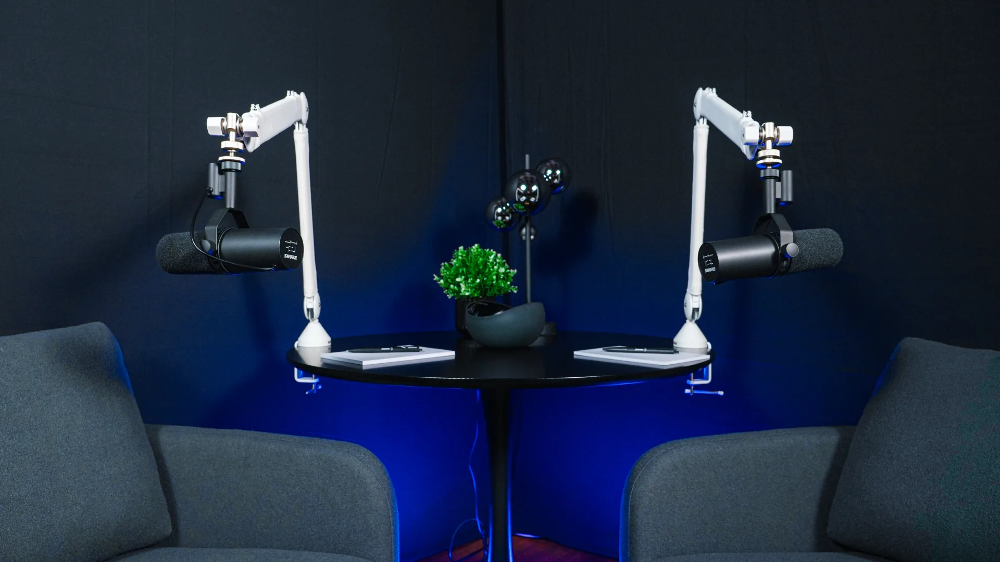
Professioneller Podcast- und Videocontent muss nicht kompliziert sein.
Seit über 20 Jahren produziert Playroom Studios Inhalte für Unternehmen, Marken und Agenturen. Wir wissen, welche Prozesse funktionieren, worauf es intern ankommt und wie man Produktionen effizient umsetzt.
Willkommen im playroom.
Seit 2013 produzieren wir auf der Hanauer Landstraße Inhalte für Marken, Unternehmen und Agenturen. In unserem Podcast Studio in Frankfurt entstehen heute Podcasts, Videopodcasts, Interviews und Expertenformate unter professionellen Produktionsbedingungen.
Während der Aufnahme kümmern wir uns um Technik, Ablauf und Produktion.
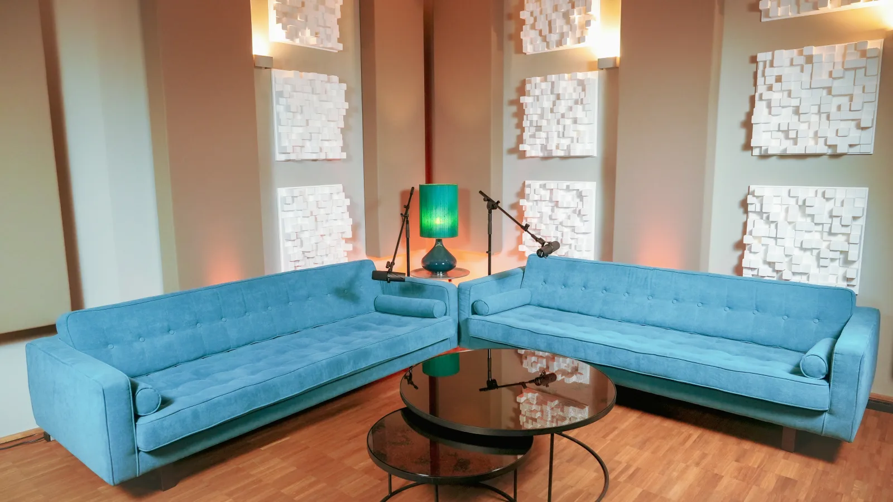
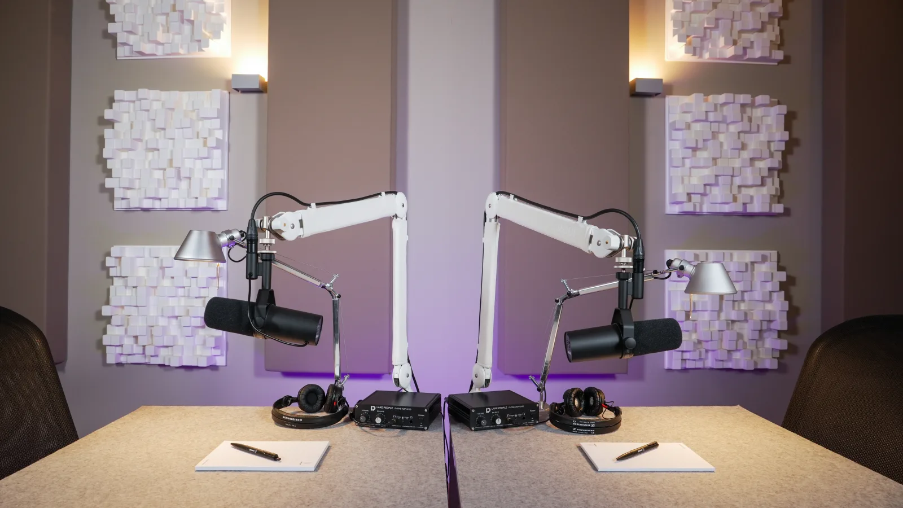
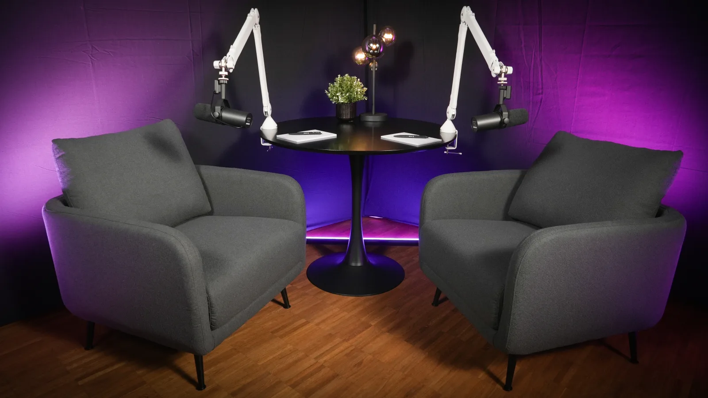
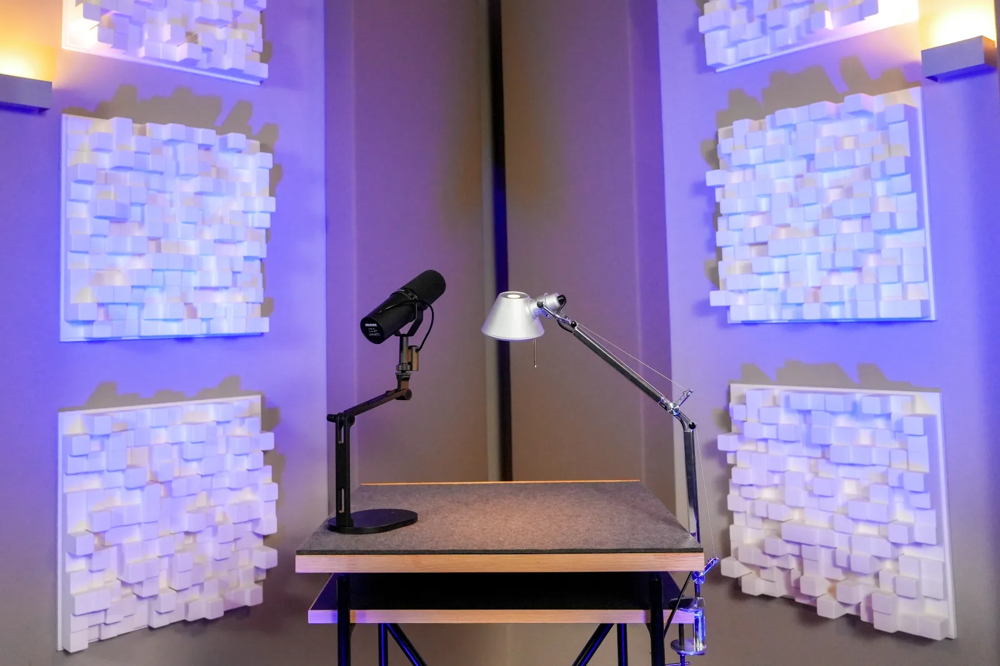
Je nach Format, Gesprächssituation und Zielgruppe richten wir das Studio passend für eure Produktion ein. Vom lockeren Gespräch bis zur Präsentation vor der Kamera.
Die gezeigten Setups sind Beispiele für typische Produktionssituationen. Je nach Format, Teilnehmerzahl und inhaltlichem Konzept passen wir Raum, Licht, Kamerapositionen und Ausstattung individuell an.
Wir beraten bei der Gestaltung des Settings und sorgen dafür, dass die Produktion optimal zu euren Inhalten und Zielen passt.
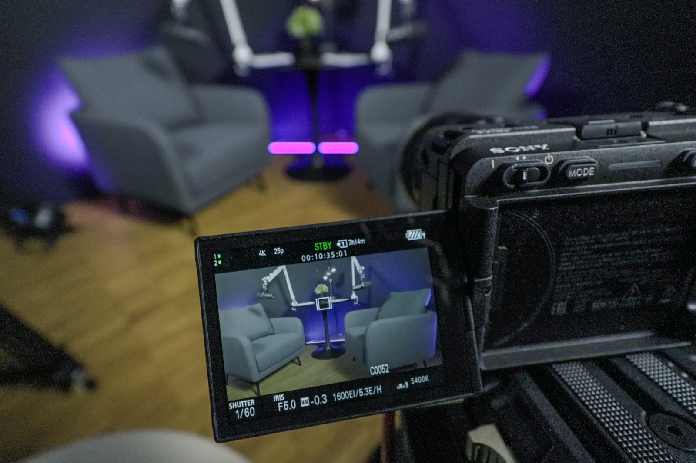
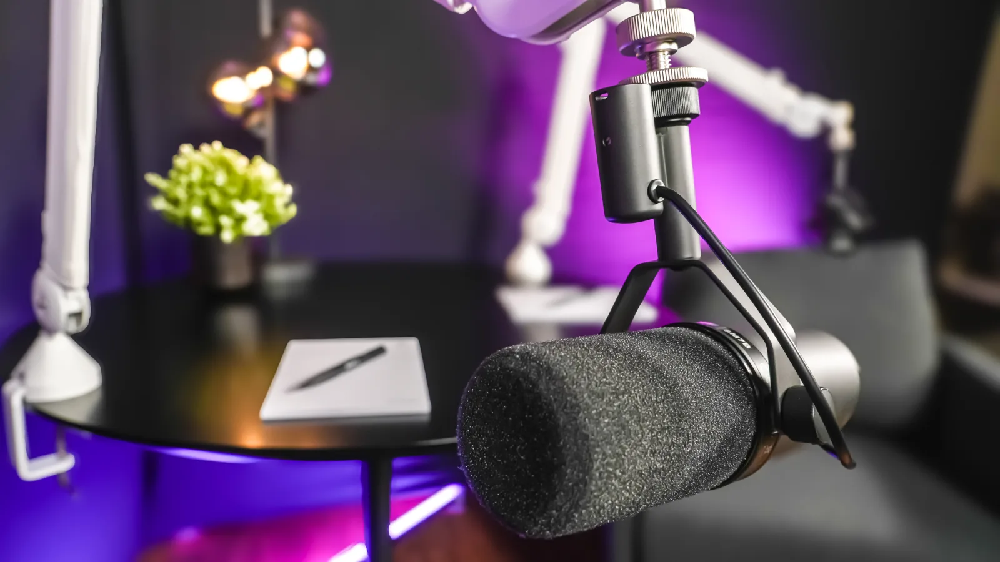
Neben klassischen Audio-Formaten produziert Playroom Studios auch Videopodcasts mit einem professionellen Mehrkamera-Setup in 4K. Die Kameraeinstellungen werden bereits in der Produktionsplanung auf die jeweilige Gesprächssituation abgestimmt.
Die Podcast- und Videopodcast-Produktion findet im Studio in Frankfurt am Main statt und ist auf Gesprächsformate für Unternehmen ausgelegt.
So entstehen Formate, die auf YouTube, LinkedIn oder internen Unternehmensplattformen eingesetzt werden können, mit kontrollierter Bild- und Tonqualität, wie sie bei einfachen Setups oft nicht erreichbar ist.
Je nach Projektumfang und internen Ressourcen übernimmt Playroom Studios einzelne Produktionsschritte oder begleitet ein Format von der ersten Idee bis zur Veröffentlichung.
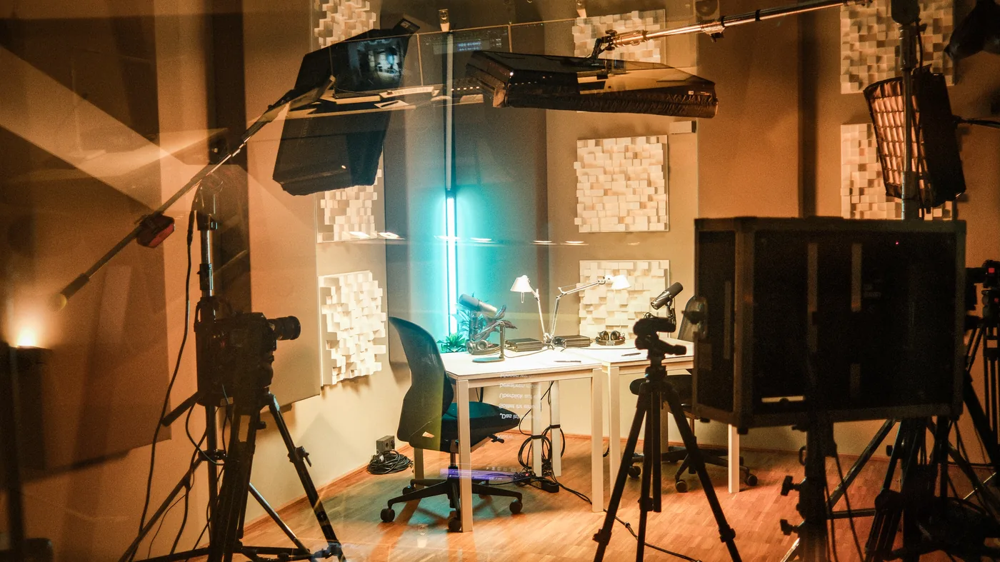
Ein Videopodcast wird dann unverwechselbar, wenn Inhalt, Bild und Klang zusammen eine klare Identität bilden. Playroom Studios unterstützt bei Bedarf auch bei der kreativen Gestaltung des Formats.
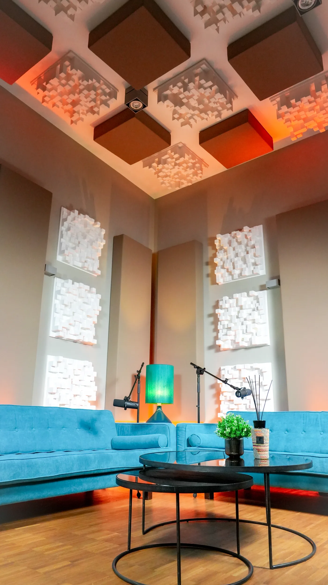
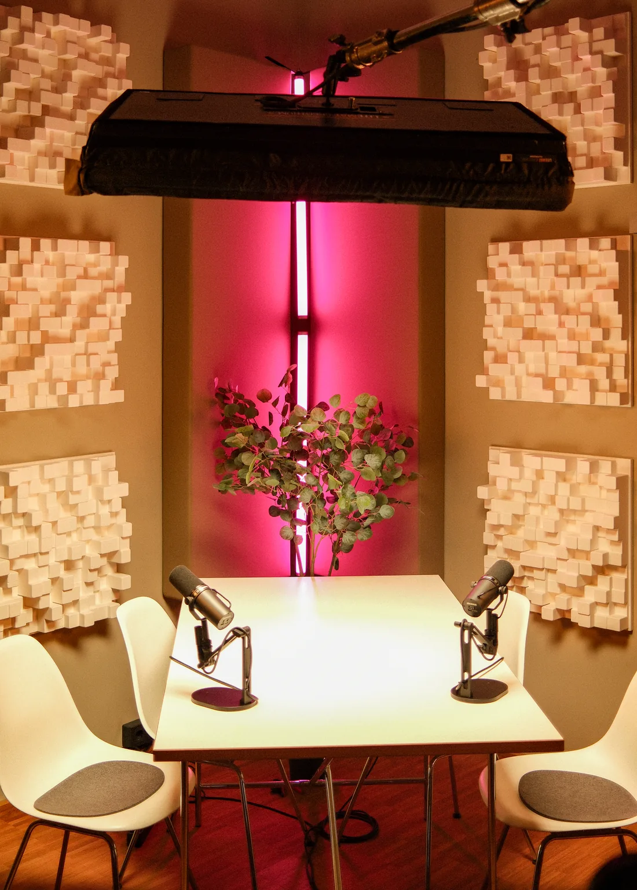
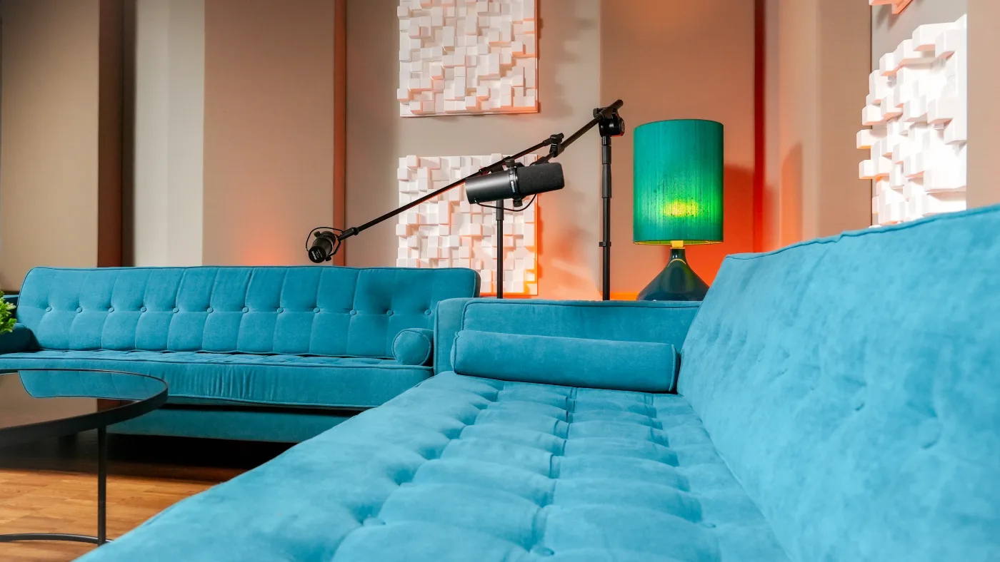
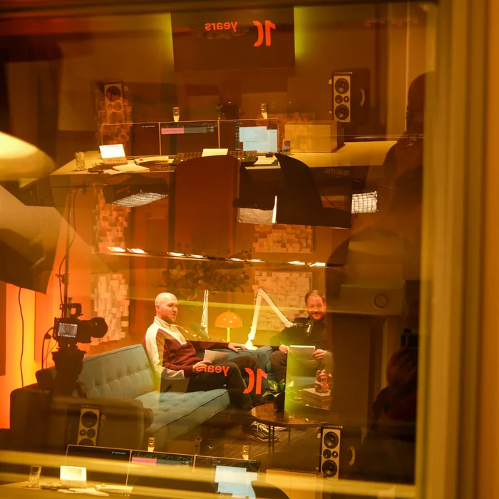
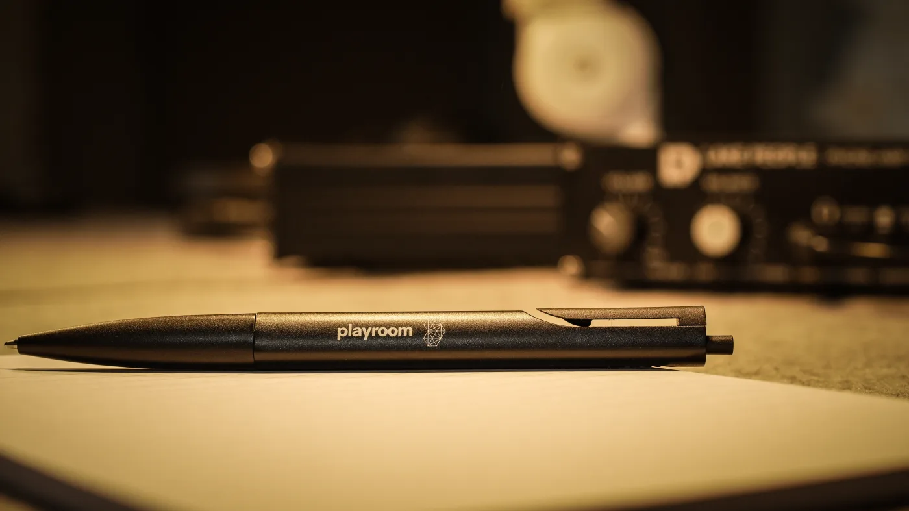
Playroom Studios betreibt ein Podcast- und Videopodcast-Studio in Frankfurt am Main auf der Hanauer Landstraße. Die Aufnahmen finden in einem akustisch optimierten Tonstudio statt, das in einer Raum-in-Raum-Konstruktion gebaut wurde.
Diese Bauweise entkoppelt den Aufnahmeraum konstruktiv von der Umgebung und schafft stabile Bedingungen für professionelle Sprachaufnahmen.
Neben der Audioaufnahme steht ein Mehrkamera-Setup für Videopodcasts zur Verfügung, sodass Gespräche gleichzeitig als Video- und Audioformat produziert werden können.
Der Standort auf der Hanauer Landstraße ist sowohl mit öffentlichen Verkehrsmitteln als auch mit dem Auto gut erreichbar.
Ja. Gesprächspartner können remote zugeschaltet werden und an einer Aufnahme teilnehmen, auch wenn sie nicht vor Ort sind.
Bild und Ton werden dabei so in die Produktion integriert, dass das Gespräch für die Teilnehmenden möglichst nahtlos geführt werden kann.
Die Anzahl der Kameras hängt vom jeweiligen Gesprächsformat und von der Anzahl der Teilnehmenden ab.
Für typische Gesprächssituationen mit zwei bis vier Personen wird in der Regel ein Mehrkamera-Setup eingesetzt. Dabei erhält jede Person eine eigene Kameraeinstellung, zusätzlich kann eine weitere Kamera für eine Totale oder für Gesprächssituationen verwendet werden.
Welche Kameraanzahl und welches Lichtsetting sinnvoll sind, wird in der Regel nach einem kurzen Produktionsbriefing entschieden.
Am Anfang steht in der Regel ein Gespräch über das geplante Format und die inhaltlichen Ziele. Dabei wird geklärt, welche Rolle der Podcast im Unternehmen spielen soll und welche Aufgaben intern übernommen werden.
Einige Organisationen bringen bereits ein fertiges Konzept und eine Redaktion mit. In anderen Fällen wird gemeinsam entwickelt, wie Gespräche aufgebaut sein können, wer als Gesprächspartner geeignet ist und ob eine Moderation sinnvoll ist.
Auf dieser Grundlage wird die Produktion geplant, einschließlich technischem Setup, Kameraanzahl, Gesprächssituation und Ablauf der Aufnahme.
Ja. Viele Formate entstehen in Unternehmen, die dieses Medium zum ersten Mal nutzen.
Am Anfang steht ein Gespräch über Ziele, Inhalte und mögliche Formate. Die Produktion kann dabei an die vorhandenen Ressourcen im Unternehmen angepasst werden, von der Konzeptentwicklung bis zur redaktionellen Begleitung.
Das hängt vom jeweiligen Format ab. Bei internen Formaten mit Mitarbeitenden gelten Zustimmungspflichten und in vielen Fällen Mitbestimmungsrechte des Betriebsrats.
Wir besprechen diese Aspekte gerne im Rahmen des Briefings und empfehlen, rechtliche Details intern oder mit einem Datenschutzbeauftragten zu klären.
Ja. Bauchbinden, Intromusik, Farbschemata und Bildsprache können auf bestehende CI-Richtlinien abgestimmt werden. Wenn entsprechende Vorgaben vorhanden sind, werden diese in Gestaltung und Postproduktion berücksichtigt.
Ja. Auf Wunsch schneiden wir bereits während der Aufnahme live zwischen den verschiedenen Kameraperspektiven. Gleichzeitig werden die einzelnen Kamerasignale separat aufgezeichnet, sodass im Anschluss weiterhin Korrekturen und Anpassungen möglich sind.
Je nach Format lässt sich die Postproduktion dadurch deutlich verkürzen und die fertige Episode schneller ausliefern.
Ja. Podcast-, Interview- und Präsentationsformate können direkt aus unserem Studio live übertragen werden. Als Plattformen kommen beispielsweise YouTube, LinkedIn, Vimeo oder Riverside infrage.
Welche technische Umsetzung für das jeweilige Format sinnvoll ist, klären wir vorab gemeinsam im Produktionsbriefing.
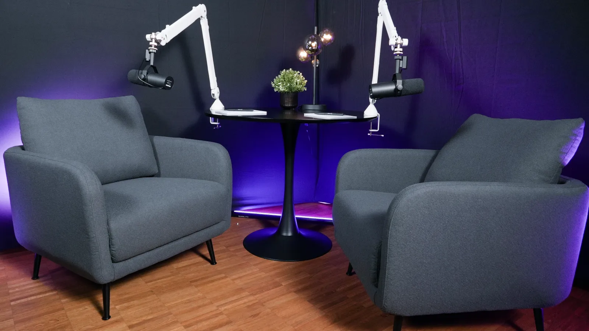
Lassen Sie uns Ihr Podcastformat entwickeln. Ob neue Formatidee oder konkretes Projekt, wir beraten Sie gern, wie sich Podcast- und Videopodcast-Formate in Ihrem Unternehmen sinnvoll umsetzen lassen.
Projekt anfragenPlayroom Studios produziert Podcast- und Videopodcast-Formate für Unternehmen in Frankfurt am Main. Der Produktionsstandort befindet sich auf der Hanauer Landstraße 287 und ist auf Corporate-Kommunikationsformate spezialisiert.
Unternehmen nutzen Podcasts zunehmend für interne Kommunikation, Leadership-Formate, Experteninterviews und strategische Themenformate. Playroom Studios begleitet diese Produktionen von der Formatentwicklung über die Aufnahme bis zur finalen Veröffentlichung.